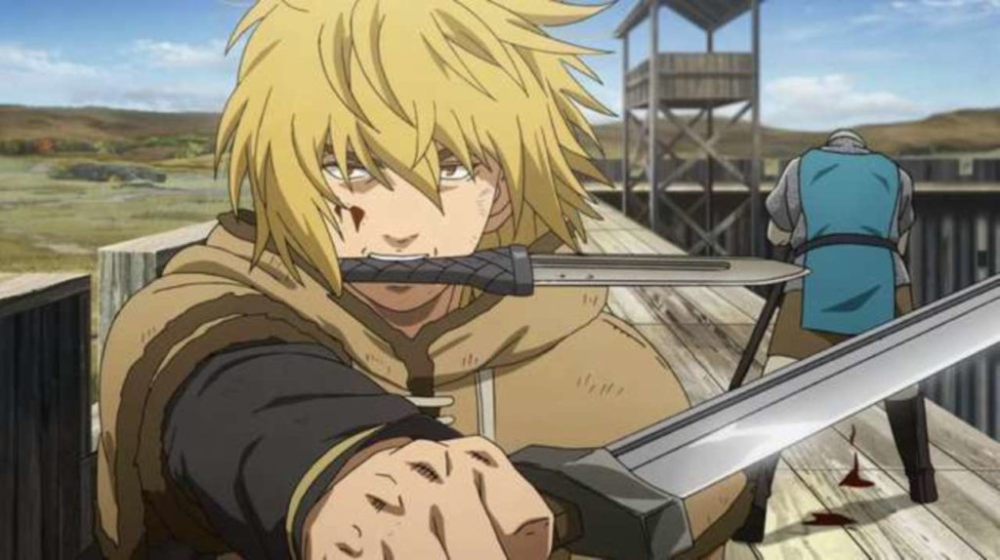

Thorfinn est le personnage principal de Vinland Saga. Au début de l'histoire, Thorfinn est un jeune guerrier Viking, fils de Thors, un célèbre combattant. Il est animé par un désir ardent de venger la mort de son père, tué au combat par Askeladd, le chef d'une bande de mercenaires. Thorfinn est un combattant féroce et habile, mais sa quête de vengeance l'amène à s'engager dans des actions violentes et cruelles qui vont progressivement changer sa vision du monde. Au fil de l'histoire, Thorfinn est confronté à de nombreux défis et épreuves qui le forcent à remettre en question ses croyances et à chercher un nouveau sens à sa vie.
 {% endblock content %}